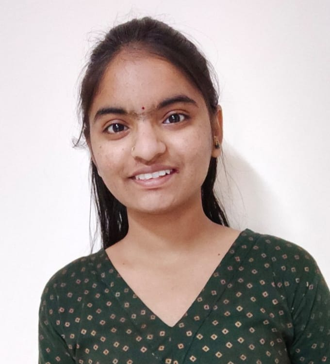

My family is an important part of my life. They have taught me the importance of hard work, patience, respect and responsibility.
My family motivates me to keep learning and work towards my career goals.

My name is Radha Mane. I have completed my Bachelor of Computer Applications from SNDT Women's University, Mumbai with 71.80%.
During my BCA journey, I developed an interest in computers, programming and web development.
I started learning how websites and applications are created. I am now practicing HTML, CSS, JavaScript and MERN Stack development.
I am a fresher and I am looking for an opportunity where I can learn, grow and contribute my skills.
I belong to Maharashtra, India.
My family, culture and life experiences have helped me develop values such as respect, responsibility, patience and hard work.
I currently live in Navi Mumbai.
Living in Navi Mumbai gives me access to many educational and career opportunities in the technology field.
My family is an important part of my life. They have taught me the importance of hard work, patience, respect and responsibility.
My family motivates me to keep learning and work towards my career goals.
My hobbies include:
I chose coding because I enjoy creating things using technology.
Coding allows me to use logic, creativity and problem-solving skills.
I enjoy finding errors in my code and solving them. Every error gives me an opportunity to learn something new.
I want to learn web development because I want to understand how real-world websites and applications are created.
Web development allows me to work with frontend, backend and databases.
I want to understand the complete journey of a web application from the user interface to the server and database.
I am interested in creating websites that are simple, useful and easy to use.
I want to understand how servers, APIs and databases work behind a website.
My long-term interest is to understand both frontend and backend development and become a MERN Full Stack Developer.
I want to continuously improve myself in different areas.
My main goal is to become a MERN Full Stack Developer.
I want to get my first opportunity in the IT industry and gain real-world experience.
In the future, I want to learn advanced technologies and build useful applications.
My Goal:
Learn
↓
Practice
↓
Build Projects
↓
Get Experience
↓
Improve
↓
Become a MERN Full Stack Developer
Technology is changing the way people learn, communicate, work and solve problems.
I believe that learning technology can help me become part of this digital transformation.
I want to continuously learn new technologies, adapt to changes and create useful solutions through coding.